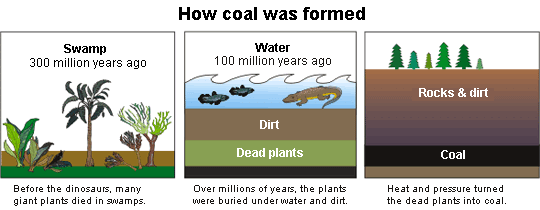

What You Should Know - Snap Circuits Green Energy: Hand Crank Data Analysis
 Important Vocabulary
Important Vocabulary
- Conserve Energy - when we save energy or try not to use more than we need
- Non-Renewable Energy - comes from sources that get used up (examples: wood, coal, natural gas)
- Fossil Fuels - fuel made from the remains of plants and animals
- Renewable Energy - comes from sources that do not run out (examples: wind, water, the sun, and human power)
- Multiples - numbers that can be evenly divided by another number without a remainder (example: 10 is a multiple of 5)
- Factors - the numbers multiplied together in a multiplication sentence (example: In 6 × 2 = 12, 6 and 2 are factors)
- Prime - a number with only two factors, 1 and itself (example: 5 is a prime number)
What Types of Energy Do You Use?
Each day, you use energy. You use it to go to school, play, do chores, and even grow! What types of energy do you use?

Light from the Sun is energy that helps us see and keeps us warm. Food is energy. The food you eat gives you the energy you need to learn, play, and grow. We burn oil, gas, and coal to run our cars, heat our houses, and make electricity.
Fossil Fuels: Buried Energy
Oil, gas, and coal are fossil fuels. These are non-renewable energy sources because we cannot make them as fast as we use them. They are quickly used up, and it takes millions of years for new supplies to form. Click here to learn more about non-renewable energy.
How Are Fossil Fuels Made?
Plants die and decay. Some plants become buried deep in the earth. Heat and pressure change dead plants into coal, oil, and natural gas.
Why do you think oil, gas, and coal are called “fossil fuels”?

What Is Renewable Energy?
Renewable energy sources include wind, solar, water, biomass, and human power.
- Wind: the wind turns wind turbines. As the turbines turn, they spin a generator. The motion creates energy, which converts into electricity.
- Solar: Sunlight shines on solar panels, which are made to convert light energy into electricity.
- Water: Flowing water turns a wheel to do work or to make electricity.
- Biomass: Energy made from plants and other organic materials.
- Human power: People do work to create energy.
Click here to learn more about renewable energy.


Alternative Energy and Electricity
Renewable energy is also called alternative energy since it is an alternative to fossil fuels.
Electricity is a very important part of most alternative energy systems. We cannot plug tools into renewable sources directly. In many cases, we need to convert the energy into electricity, a usable power source. One way to make electricity is to use a force, such as wind, water, or human power, to turn a generator. A generator is like a motor, but instead of electricity making the motor spin, the spinning generator creates electricity.

Wind Power - Wind turns the blades, which spin the generator. The motion of the generator creates energy, which converts to electricity.

Human Power - Pedaling the bicycle spins the wheel, which turns the generator. This converts the energy into electricity, which powers the blender.
What Is Electricity?
All of the objects around us are made up of tiny particles called atoms. Each atom is made up of even smaller particles, known as electrons, which have a negative (-) charge, and protons have a positive (+) charge.

Think of charge as this basic relationship between particles: opposite charges attract (move towards) each other, and similar charges oppose (move away from) each other.
When many electrons (-) at one location move towards many protons (+) at another location, we call this an electric current or a flow of electrons. The general term for current and charge interactions is known as electricity.
An extreme example of this can be seen during many thunderstorms. Lighting is simply the transfer of electrons from the negatively charged clouds to the more positively charged ground.
Click here to learn more about electricity.
Circuitry: Moving Electricity
To use electricity, we must move it from the source of renewable energy (like a bicycle or a solar panel) to where we need it (like a blender or your home).
Circuits are the way we move electricity. They are electrical systems that allow us to produce, move, store, and control electricity. In a circuit, electricity flows from a power source (like a solar panel or battery) through a wire path to an electrical device (like a light or motor) and then back to the power source through another wire.

Storing Electricity

We use electricity all day, every day. Where does electricity come from at night if we rely on solar panels? Or how do we power our homes if we use wind turbines and there is no wind? We need a way to store the electricity produced by renewable energy sources.
Batteries of all sizes and shapes store electricity. Solar panels and turbines change renewable energy into electricity. The electricity charges batteries and the batteries keep the electricity until it is needed.
Factors and Multiples
If I asked you to count by five, what would you say? You are most likely thinking, “5, 10, 15, 20, 25, 30…”. These numbers are multiples of five. Multiples are numbers that can be evenly divided by another number without a remainder. You can find the multiples of a number by skip counting. There is an infinite number of multiples for each number because we could continue to skip count forever. To decide if a number is a multiple of another number, see if you can evenly divide it.
Factors are numbers that are multiplied together to equal another number. When we write a multiplication equation like 3 x 2=6, 3 and 2 are factors.
Factor Pairs
What multiplication facts can you think of that equal 10? Every number has factor pairs or numbers that can be multiplied to equal that number. Let’s look at the example below. It is helpful to draw factor “rainbows” to find all of the factors of a given number. This strategy helps you make sure that you have found all of the factor pairs for the number. Start with 1 times the number itself. Then, move to 2. Check each number until you reach a number that you have already used. For example, to find the factor pairs of 28, you start with 1 × 28. Next, see if 2 times a number equals 28. Since 2 × 14 = 28, 2 and 14 are the next factor pair. 3 is not a factor of 28. 4, on the other hand, is a factor of 28 because 4 × 7 =28. Continue trying each number. Once you reach 7, you know that you have found all of the pairs since it was already used in a factor pair.
.png "factor pairs")
Prime or Composite?
Numbers can be either prime or composite. A prime number has only two factors: 1 and itself. For example, 7 is a prime number. The only factors of 7 are 1 and 7. Composite numbers have more than one factor pair. 10 is a composite number.
Be careful: not all odd numbers are prime numbers! 27, for example, is a composite number because 1, 27, 3, and 9 are all factors of 27.
Career Connection and Real-World Application
Event Planner
Event planners coordinate all the parts of an event from food, the seats, to cost. Event planners use factors to help them arrange a room for a speaker. If they know they need to arrange 100 chairs, they can think about factors to help them decide on how many chairs need to be in each row. Some options are to organize the chairs into 4 rows of 25, 5 rows of 20, or 10 rows of 10. In this way, factors help event planners group chairs into equal rows.
Baker
A baker make baked goods like cakes, cookies, or pies. Multiples can also be important for bakers. Bakers need to decide how many cookies each batch will make. Then, they decide how many multiples of that batch they should create to have enough cookies for their customers. It is helpful for them to understand factors and multiples to know the number of batches needed quickly.
Architect
Architects design and help build a variety of buildings from houses to event centers. Architects use prime and composite numbers, too. If they are building a house that will use solar panels as a renewable energy source, they need to make sure they have equal rows of panels. They will choose a composite number so that they can create rows that have equal groups.